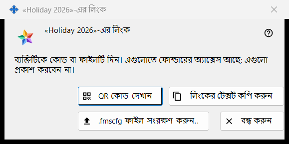
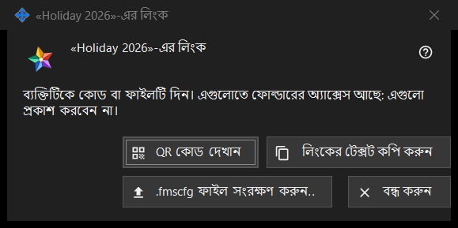

ফোল্ডারের জন্য লিংক
এটি কীসের জন্য
একটি প্রকাশিত ফোল্ডার এমন কারও হাতে পৌঁছে দেয় যার এক্সচেঞ্জ সার্ভারে অ্যাকাউন্ট নেই: QR কোড, লিংকের টেক্সট এবং .fmscfg ফাইল হিসেবে। এক্সচেঞ্জ অ্যাকাউন্টে আমার শেয়ার করা ফোল্ডার গ্রুপে লিংক তৈরি করুন.. বা নতুন লিংক.. চাপার পর এই উইন্ডো খোলে; আবার প্রতিটি ফোল্ডারের জন্য খোলা বাইরের অ্যাক্সেস দিন.. উইন্ডোতে QR / কোড দেখান.. চাপলেও খোলে। বর্তমান প্রোগ্রামে এই দুটি কমান্ডই বন্ধ, কারণ অ্যাকাউন্টের বাইরের লোকেদের জন্য অ্যাক্সেস দেওয়া হয় না; এই পাতায় বলা হয়েছে লিংক থাকলে উইন্ডোটি কী দেখায়।


এই ক্রমে
- একটি প্রকাশিত ফোল্ডার বেছে নিয়ে লিংক তৈরি করুন.. চাপুন (পুরনো লিংক বদলাতে নতুন লিংক.. চাপুন)।
- উইন্ডোর উপরের নোটটি পড়ুন।
- এই বোতামগুলোর একটি দিয়ে লিংক দিন: .fmscfg ফাইল সংরক্ষণ করুন.., লিংকের টেক্সট কপি করুন অথবা QR কোড দেখান।
- বন্ধ করুন চাপুন।
উপাদানসমূহ
উইন্ডো কখন পাওয়া যায়
উইন্ডোটি শুধু এমন লিংকের জন্য থাকে যা এইমাত্র তৈরি হয়েছে বা আগে থেকেই আছে। অ্যাকাউন্টের বাইরের লোকেদের জন্য অ্যাক্সেস দেওয়া না হলে লিংক তৈরি করুন.. ও নতুন লিংক.. বন্ধ থাকে, সেগুলোর নিচের নোটে কারণ লেখা থাকে এবং উইন্ডো খোলে না; এছাড়া QR / কোড দেখান.. বন্ধ থাকে। লিংক মুছুন চালু থাকে।
উপরের নোট
নোটে লেখা আছে: ব্যক্তিটিকে কোড বা ফাইলটি দিন। এগুলোতে ফোল্ডারের অ্যাক্সেস আছে: এগুলো প্রকাশ করবেন না। QR কোড, লিংকের টেক্সট বা ফাইল যার কাছে থাকে, সে-ই ওই ফোল্ডার খুলতে পারে। লিংকের টেক্সট কখনো পর্দায় দেখানো হয় না।
QR কোড দেখান
QR ছবিটি একটি বড় করার উইন্ডোতে খোলে। বোতামটি শুধু তখনই থাকে যখন QR কোড বানানো গেছে; লিংকের টেক্সট QR কোডের জন্য খুব বড় হলে উত্তর আসে: কোডটি QR কোডের জন্য অনেক বড় - ফাইলটি ব্যবহার করুন।
লিংকের টেক্সট কপি করুন
লিংকের টেক্সট (এটি FMSSFTP2: দিয়ে শুরু হয়) একটি সুরক্ষিত পথে ক্লিপবোর্ডে রাখে, যাতে তা Windows-এর ক্লিপবোর্ড ইতিহাসে ও ক্লাউড ক্লিপবোর্ডে না যায়, এবং উত্তর দেয়: লিংকের টেক্সট কপি হয়েছে। বোতামটি শুধু তখনই থাকে যখন লিংকের টেক্সট আছে।
.fmscfg ফাইল সংরক্ষণ করুন..
শুধু এই একটি ফোল্ডারের জন্য একটি সেটিংস ফাইল সংরক্ষণ করে, যা কেবল এর মালিক পড়তে পারেন। উইন্ডো হয় পথসহ ফাইল সংরক্ষিত হয়েছে: জানায়, নয়তো ফাইলটি সংরক্ষণ করা যায়নি। বোতামটি শুধু তখনই থাকে যখন ফাইলটি বানানো গেছে।
নতুন লিংক ও লিংক মুছুন
দুটিই এই উইন্ডোর নয়, গ্রুপের অংশ, এবং দুটিই আগে জিজ্ঞেস করে (ডিফল্ট উত্তর: না): নতুন লিংক.. সতর্ক করে যে আগের সব QR কোড ও ফাইল কাজ করা বন্ধ করে দেবে, আর লিংক মুছুন সতর্ক করে যে এর সাথে দেওয়া সব QR কোড ও ফাইল কাজ করা বন্ধ করে দেবে।
বন্ধ করুন
উইন্ডো বন্ধ করে এবং তার থেকে লিংকের টেক্সট, ফাইলের বিষয়বস্তু ও QR ছবি সরিয়ে দেয়।
ম্যানেজার সেটিংস · SFTP শেয়ারিং সেটিংস · এক্সচেঞ্জ সার্ভার সেটিংস